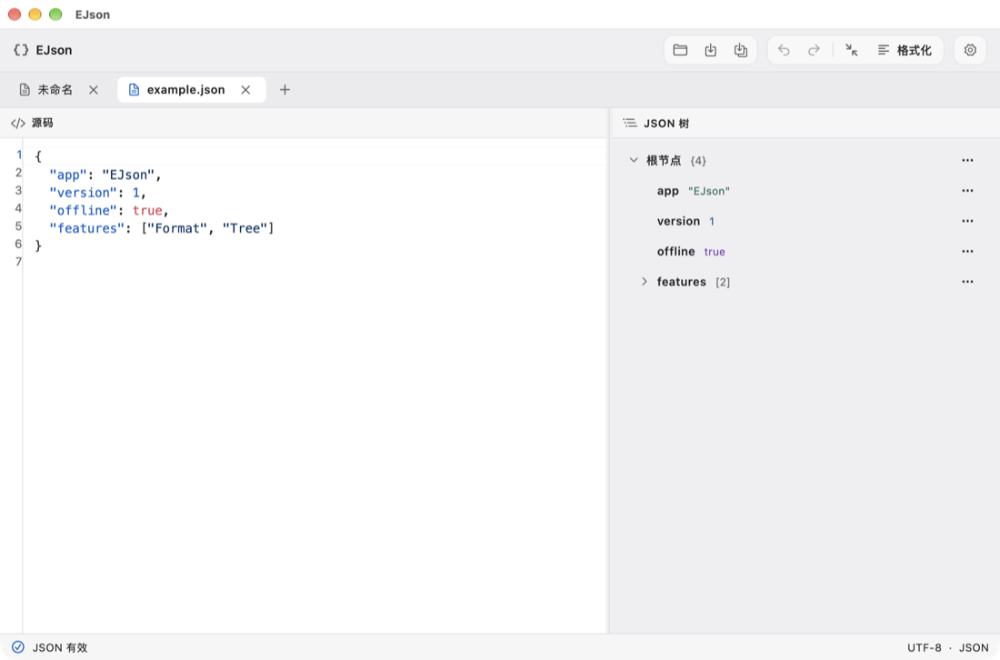

Source and tree, in sync
Select a node to jump to its source. Rename keys or replace values in the tree, with changes and undo shared across both views.
Edit source and explore its tree side by side. Format JSON, jump to errors, or change values right in the tree. All editing and parsing happen on your device.
macOS Windows Linux

Select a node to jump to its source. Rename keys or replace values in the tree, with changes and undo shared across both views.
Format or minify without losing duplicate keys, number literals, or string escapes. Jump straight to a syntax error.
Reopen your last files and tabs. Set syntax highlighting, tree styles, and the interface language independently.
Find platform builds and release notes on GitHub Releases.
Apple silicon / Intel DMG
Choose arm64 for Apple silicon or x86_64 for Intel. Open the DMG and drag EJson into Applications. A universal ZIP is also available.
brew tap echo-braveshine/ejson https://github.com/Echo-BraveShine/EJson.git
brew install --cask echo-braveshine/ejson/ejsonx64 Setup.exe / MSI
Use Setup.exe for a per-user install or MSI for a machine-wide install. A portable ZIP is also available.
The release page also provides a local WinGet manifest.
x86_64 / ARM64 AppImage
Make it executable and open it without administrator permissions. Requires glibc 2.39+, GTK 3, and OpenGL.
DEB packages are available for Ubuntu 24.04+ and Debian 13+, and RPM packages for Fedora and compatible systems.